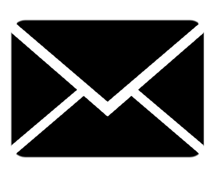

Heeft u vragen of opmerkingen over PICO? Over de werking van de applicatie of over de data? Dat horen we graag. Uw input helpt ons om ons product te verbeteren. U kunt dan mailen naar PicoSupport@geodan.nl
|  | PicoSupport@geodan.nl |
Pico is ontwikkeld door een samenwerkingsverband met zes partners.
Geodan geeft sinds 1985 vorm en inhoud aan alle aspecten van ruimtelijke informatievraagstukken. Op dit moment werken er ca. 130 hoogopgeleide en gemotiveerde Geo-ICT specialisten bij Geodan, variërend van consultants met inhoudelijke kennis en projectmanagers tot data- en ICT-specialisten. Geodan ontwikkelt specifieke diensten–en producten voor ruimtelijke toepassingen in diverse markten.
TNO is al jaren een vooraanstaande speler voor innovatie en advies in duurzame energiesystemen, in woning- en utiliteitsbouw, in verduurzaming van de stad en als procesbegeleider bij complexe stakeholderprocessen. TNO is kennispartner voor het verduurzamen van stedelijke gebieden, en streeft ernaar om een regie rol te hebben in het inbrengen van kennis in het besluitvormingstraject.
Alliander beheert gas- en elektriciteitsnetwerken in vijf provincies in Nederland en zorgt dat de energiemarkt wordt gefaciliteerd. Door middel van concrete proeftuinen onderzoekt Alliander mogelijkheden voor het plannen van duurzame energiesystemen in wijken. Het innovatieve karakter van deze ontwikkelingen zorgt voor de noodzaak voor veel breder gebruik van (geo-)informatie dan tot op heden
Ecofys heeft al 30 jaar een visie: “Duurzame energie voor iedereen”. Toonaangevende experts in Nederland, maar ook in Duitsland, Engeland en België maken zich hier hard voor. Duurzame energie voor iedereen vraagt om een visie, een plan om daar te komen en voor het maken hiervan zijn gegevens, analyses en creatief denken nodig. PICO is een platform wat gebruikt kan worden om deze plannen te maken, om de dialoog met elkaar aan te gaan, om daadwerkelijk te komen tot duurzame energie voor iedereen.
NRG031 BV, is een MKB bedrijf dat zich heeft gespecialiseerd in de financiering van duurzaamheid. NRG031 ”Nederland Energiezuinig” bereikt haar doelstelling via een viertal kerncompetenties: Inzicht, Calculeren, Organiseren, en Financieren.
Esri Nederland heeft als missie om gebruikers van geo-informatie succesvol te maken. Wij willen een wereld creëren waarin iedereen, elke dag, overal gebruik maakt van de kracht van geografische informatie. Wij geloven dat dit leidt tot een beter begrip van onze wereld en daardoor tot betere besluiten. Esri Nederland maakt de gebruikers van geo-informatie succesvol doordat zij excellente GIS-technologie op een waardevolle manier kunnen inzetten.